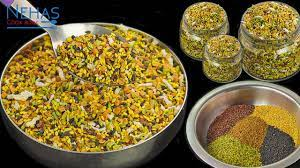

multi seeds mukhwas recipe

Ingredients
200 grams or 1.5 cups of white sesame seeds
100 gram or ¾ cup black sesame seeds
100 grams or 1 cup of fennel seeds
50 grams or ¼ cup flax seeds - alsi
15 grams or 1/8 cup carom seeds - ajwain
15 grams or 1/8 cup suva seeds - suva dana
150 grams or 1 cup dana dal seeds
½ cup grated dry amla - optional
Turmeric powder
salt to taste
water as required
Instructions
in a bowl, add white sesame seeds, 1 tsp turmeric, ¾ tbsp salt, and 1-2 tbsp water. Mix well.
Then in a bowl, add black sesame seeds, salt, and some water. Mix well.
Now in fennel seeds add ¼ tsp turmeric powder, 1 tsp salt, and some water. Mix well.
Then in flex seeds, add ½ tsp salt and 1 tsp lemon juice. Mix well.
Now in a bowl, add ajwain and Suva seeds. Then add ½ tsp salt, ¼ tsp turmeric powder, and some water. Mix well.
Then dry all ingredients for 30 minutes to 1 hrs.
Now in a Kadai, roast all seeds on medium flame till they become crispy.
Mix all roasted seeds and sieve them with a very small hole Jara. (refer to video)
Then add dhana dal and grated dry amla. Mix well.
Gujarati mukhwas is ready. Store it in an air-tight container.